CSS: CLASE 5
¿Qué es CSS?
Es un lenguaje de diseño que nos permite darles estilos a un lenguaje de marcado.
La palabra CSS viene de Cascading StyleSheets, esto quiere decir: Hojas de Estilo en Cascada. La palabra cascada hace referencia a una propiedad muy importante de css, y es la forma en que se comporta cuando entran en conflicto dos o más reglas de estilo.
Hay tres formas de utilizar una hoja de estilo:
- CSS externo: En el documento HTML tenemos que incluir una referencia al archiivo .css dentro del elemento < link >. < link rel="stylesheet" href="css/styles.css" >
- CSS interno: Incluimos la etiqueta < style > dentro del < head > en nuestro documento. < style > p { color: red; } < /style >
- CSS en línea: Dentro del atributo style="" incorporamos los estilos que se van a aplicar solo en esa misma etiqueta. < p style="color:red"; > Así se aplica un estilo en línea < /p >
Estructura
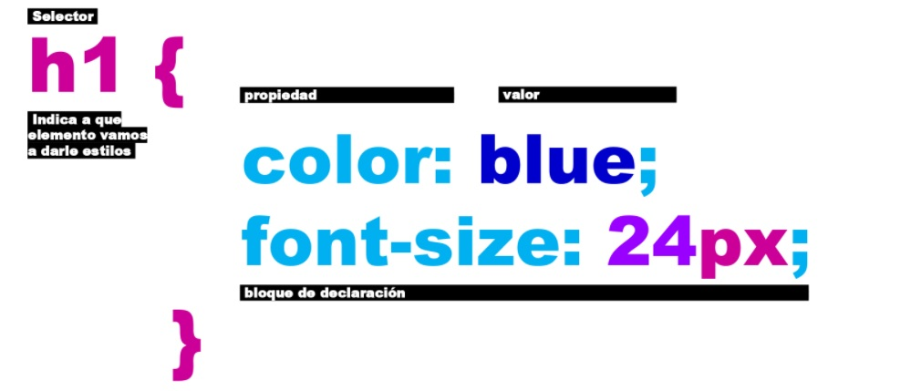Selectores
La declaración indica 'qué hay que hacer', y el selector indica 'a quién hay que aplicarlo'.:
- Selector universal: Selecciona todos los elementos de HTML
- Selector de etiqueta: Se utiliza para seleccionar una etiqueta específica.
- Selector de clase: Se utiliza agregando el atributo class a los elementos que queramos aplicarles estilos.
- Selector de ID: Funciona igual que .class pero solo puede utilizarse en un elemento HTML
Font
- font-size: nos permite especificar el tamaño de la fuente (px, em, rem)
- font-style: nos permite darle estilo a la fuente (normal, italic, oblique)
- font-family: establece una lista de fuentes
- font-weight: nos permite especificar el ancho de la fuente (bold, 400, 600)
Colores
La propiedad color se puede usar en cualquier elemento, aunque principalmente se usa para modificar el color del texto. Existen diferentes formas de especificar el color:
- Valor hexadecimal: #31078C o #FF0000
- Valor RGB (Red, Green, Blue): rgb(250, 0, 250), rgb(0, 0, 0,) Es el color negro y por el contrario rgb(255, 255, 255) es blanco
- Valor RGBA (RGB + Alpha): rgba(5, 173, 213, 1). El valor Alpha tiene que estar comprendido entre 0-1 y hace referencia a la transparencia del elemento, siento 1=opaco y 0=transparente.
Medidas
- Absolutas (px): Las unidades absolutas son medidas fijas, en pixeles, que deberían verse igual en todos los dispositivos.
- Relativas (em y rem): Son unidades relativas al dispositivo sobre el que se está viendo la página web, que dependiendo de cada usuario puede ser distinto. Flexibles (vw y vh o vmin y vmax): Relativas al tamaño del viewport.
CSS: CLASE 6
Etiquetas semánticas
- header: Cabecera de la página.
- nav: Navegación, enlaces, categorías.
- main: Especifica el contenido principal de un documento.
- section: Define una sección en un documento.
- article: Representa un componente de una página que consiste en una composición autónoma de la página.
- aside: Agrupación de contenido no relacionado con el tema principal del documento.
- footer: Pie de página.
DIV y SPAN
- span: Es un contenedor en línea. Sirve para aplicar estilo al texto o agrupar elementos en línea.
- Etiquetas: span y /span
- Definición: Elemento especial y por lo tanto, en línea.
- Crea una caja, es en línea.
- Puede contener: texto y/o elementos en línea.
- div: Sirve para crear secciones o agrupar contenidos.
- Etiquetas: div y /div.
- Definición: Elemento en bloque.
- Crea una caja, es en bloque.
- Puede contener: texto y/o cero o más elementos en bloque o en línea.
Atributos Globales
- style: Especifica un estilo CSS conforme al elemento.
- class: Especifica uno o más nombres de clases para un elemento.
- id: Especifica un id único por cada página.
- title: Especifica información extra sobre un elemento.
- hidden: Evita que el elemento y sus descendientes se muestren en el navegador.
Más propiedades de CSS
- letter-spacing: Separación de las letras. Medidas posibles: px, rem, em, vw.
- word-spacing: Separación de palabras.
- text-align: left, center, right, justify.
- text-transform: upper-case (pasa el texto a mayúscula), lowercase, capitalize (mayúscula en la primera letra de las palabras).
- text-decoration: none, overline, line-through, underline, overline underline.
- text-decoration-color: RGB, RGBA, HSL, HSLA, #XXXXXX
- text-decoration-style: wavy, solid, double
- text-shadow:
- list-style-type: lower-roman, upper-alpha, upper-roman, lower-alpha,none
- list-style-type: circle, square, disc, none
CSS: CLASE 7
Especificidad
La especificidad hace referencia a la relevancia que tiene un estilo sobre un elemento de la página al cual le están afectando varios estilos de CSS al mismo tiempo. Es decir, hace referencia al grado de importancia de un estilo sobre otro.
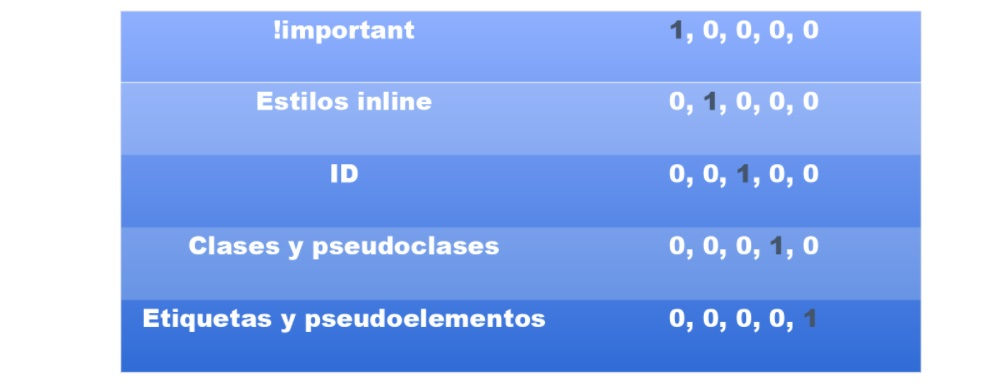 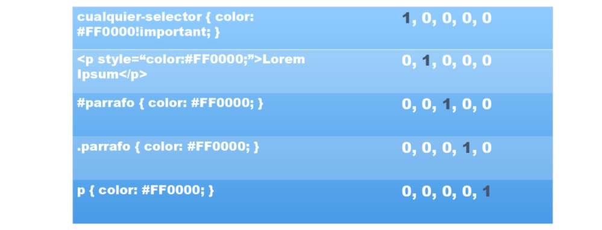Selectores
- Selector descendiente: Se aplican a los elementos que tienen una relación padre-hijo, es decir las etiquetas que están dentro de otras etiquetas. En el siguiente ejemplo es más fácil agregar un selector descendiente que aplicar una clase a cada elemento p
Modelo de Caja
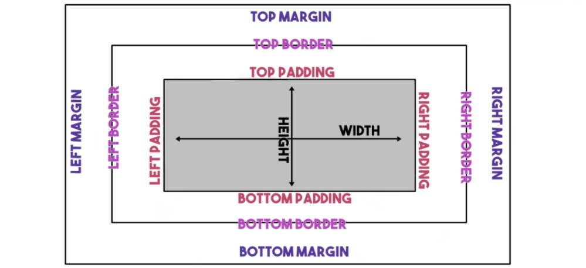Margin
Se utilizan para crear espacia alrededor de los elementos, fuera de los bordes definidos.
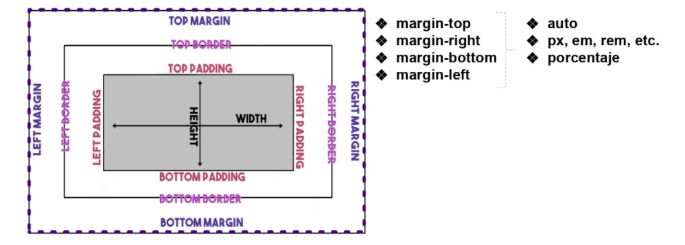 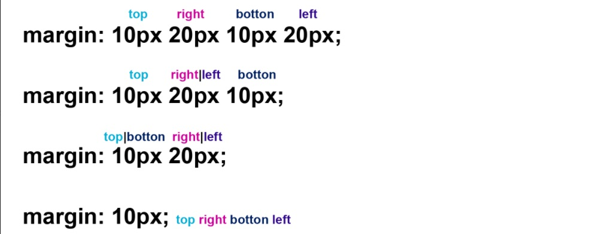Padding
Se utiliza para generar espacio alrededor del contenido de un elemento dentro de los bordes definidos.
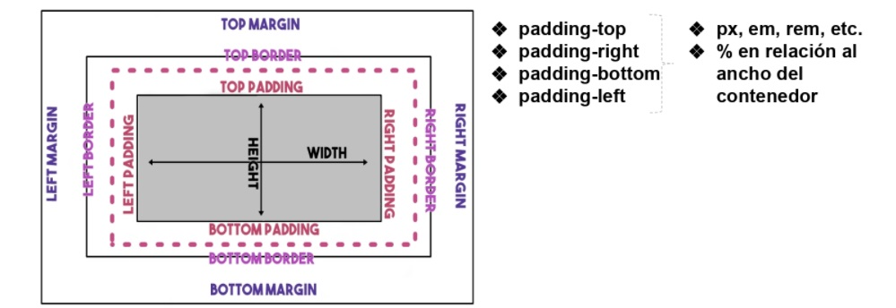 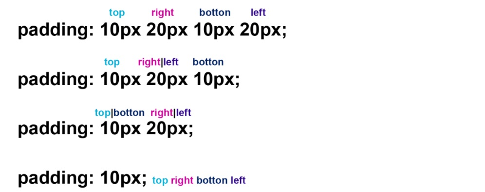Border
Permiten especificar el estilo, el ancho y el color del borde de un elemento.
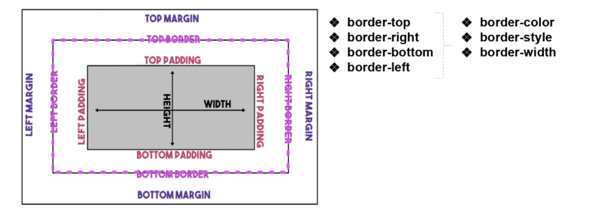Box-sizing
Indica como se debe calcular el ancho y el alto total de un elemento. Esta propiedad ayuda a crear diseños de cajas más fácil y mucho más intuitivos. Acepta los valores:
- box-sizing: content-box; Es el valor que cualquier caja tiene asignada por defecto. Las propiedades width y height no incluyen el border, padding o margin.
- box-sizing: border-box; Las propiedades width y height incluyen el contenido, padding y border pero no el margin
CSS: CLASE 8
Medidas
Las medidas en CSS se emplean para definir la alura, el ancho, los márgenes de los elementos y para establecer el tamaño de letra del texto. Todas las medidas se indican como un valor numérico entero o decimal seguido de una unidad de medida (sin ningún espacio en blanco entre el número y la unidad de medida). CSS divide las unidades de medida en dos grupos: absolutas y relativas.
- Absolutas: Las unidades absolutas son medidas fijas, su valor real es directamente el valor indicado que se ve igual en todos los dispositivos.
- Relativas: Las medidas relativas definen su valor en relación con otra medida, por lo que para obtener su valor real, se debe realizar alguna operación con el valor indicado.
- Flexibles: Dentro de las medidas relativas están las flexibles que son relativas al tamaño del viewport.
Medidas absolutas
La principal ventaja de las unidades absolutas es que su valor es directamente el valor que se debe utilizar, sin necesidad de realizar cálculos intermedios. Pero la desventaja es que son muy pocos flexibles y no se adaptan fácilmente a los diferentes medios y por eso no suelen ser utilizadas. De todas las medidas asbolutas, la más utilizada es el pixel (px).
Una medida indicada mediante unidades absolutas está completamente definida, ya que su valor no depende de tro valor de referencia.
- cm: centímetros.
- mm: milímetros
- px: pixeles. Un px equivale a unos 0.26mm
- pt: puntos. Un pt equivale a unos 0.35mm
- in, pulgadas: Una in equivale a 2.54cm
- pc: picas. Una pc equivale a unos 4.25mm
Medidas relativas
Las unidades relativas, a diferencia de las absolutas, no están completamente definidas, ya que su valor siempre está referenciado respecto a otro valor. Son las más utilizadas por la flexibilidad con la que se adaptan a los diferentes medios.
- em: relativa respecto del tamaño de letra del elemento. Por defecto al tamaño de letra debería ser de 16px que equivaldrían a 1em pero, por ejemplo, si le daríamos un font-size de 10px al body, 1em equivaldría a 10px. Siempre va a variar dependiendo cual es el tamaño del elemento padre. 1.2em sería 20% más que el tamaño de su elemento padre.
- rem (root em): es muy similar a em con la diferencia de que no es escalable, no depende del elemento padre sino del elemento raíz del documento, o sea < html > : root representa a la etiqueta html. Si el font-size del html es 16px, 1rem sería igual a 16px en cualquier parte del documento.
Medidas flexibles
as unidades flexibles, son todas relativas a las dimensiones del ancho o alto del viewport en el que se visualice nuestra página, ya sea un dispositivo móvil o de escritorio.
- vw: viewport width, esta medida es relativa al 100% del viewport. Lo que quiere decir que si decimos que un div debe medir 50vw, es equivalente a 50% del ancho total del viewport.
- vh: viewport height, va a ser un porcentaje relativo a la altura total del viewport. Entonces, si definimos que un div mide 50vh y el alto del viewport es 800px, nuestra div medirá 400px.
Posicionamiento
Podemos alterar la posición de las cajas con la propiedad position que acepta los siguientes valores.
- static: es el valor por defecto, un elemento con este valor no está posicionado.
- relative: se comporta igual que static a menos que le agregemos las propiedades: top | botton | right y/o left y así causando un reajuste en su posición, por otro elemento no podrá ajustarse a cualquier hueco dejado por este elemento.
- absolut: la posición de una caja se establece en forma absoluta respecto de su elemento contenedor y el resto de elemento de la página ignoran la nueva posición del elemento.
- fixed: hace que la caja esté posicionada con respecto a la ventana del navegador, lo que significa que se mantendrá en el mismo lugar incluso al hacer scroll en la página.
- sticky: se posiciona según el estado de desplazamiento del usuario. Se 'pega' en su lugar, después de alcanzar una posición de desplazamiento determinada.
z-index
En los casos en que haya elementos que queden superpuestos, podemos determinar el orden en que se apilarán. La propiedad z-index indica el orden de un elemento posicionado, los elementos con mayor valor z-index van a cubrir a aquellos con menor valor.
Display
Cada elemento tiene un valor de display por defecto, ya vimos los valores por defecto block e inline que los navegadores le dan a los elementos.
- block: un elemento block empieza en una nueva línea. div, header, h1-h6
- inline: un elemento inline pude contener algo de texto dentro de un párrafo sin interrumpir el flujo del párrafo.
- none: es utilizado para ocultar elementos sin eliminarlos, no deja un espacio donde el elemento se encontraba.
- inline-block: los elementos inline-block fluyen con el texto y demás elementos como si fueran elementos en-línea y además respetan el ancho, el alto y los márgenes verticales.
Flexbox: Teoría
CSS: CLASE 9
Selectores Avanzados
- Selector de hijos: Si no queremos seleccionar todos los elementos descendientes pero si a los hijos directos podemos utilizar el símbolo <. 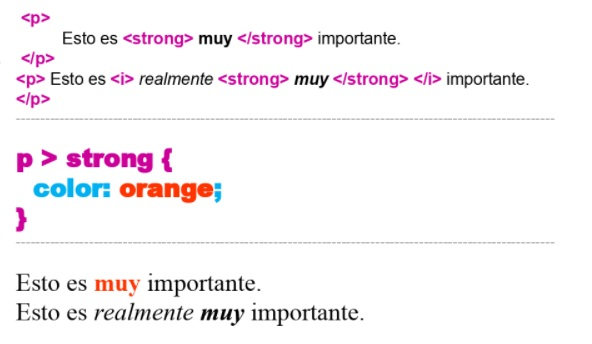
- Selector de hermanos adyacente: Permite seleccionar un elemento específico que viene inmediatamente después de otro elemento específico, en el mismo nivel de jerarquía de elementos. 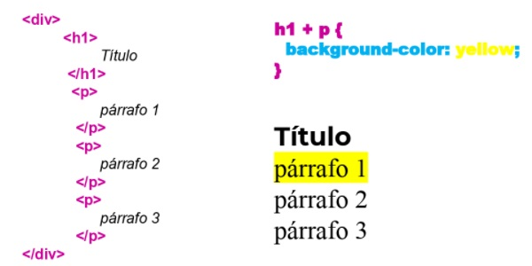
- Selector de hermanos general: Es muy similar al selector de hermano adyacente, excepto que permite seleccionar todos los hermanos del tipo de elemento especificado, no sólo el que aparece inmediatamente después del elemento en el lado izquierdo. 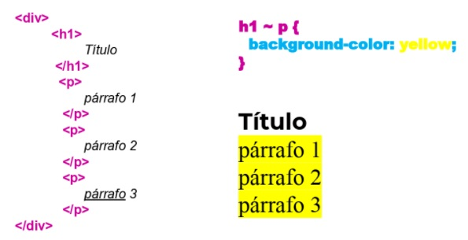
- Selector de atributo: Permiten seleccionar elementos en función de los atributos que contienen. Podemos seleccionarlos desde el nombre del atributo, desde su valor o también basándonos en una sub-cadena dentro del valor de un atributo.
Pseudoclases
Una pseudoclase en CSS es una palabra clave añadida a un selector que especifica un estado especial del elemento o elementos seleccionados. Permite aplicar un estilo a un elemento no sólo en relación con el contenido de la estructura del documento, sino también en relación a los factores externos, como por ejemplo:
- la historia del navegador (:visited)
- el estado de su contenido (:checked en algunos elementos del formulario)
- o la posición del mouse (:hover)
Todas las pseudoclases son una palabra procedida por dos puntos y todas se comportan del mismo modo. Seleccionan un fragmento del documento que está en un estado determinado y se comportan como si se hubiera añadido una clase a su HTML.
- :first-child: Se utiliza para representar al primer elemento entre un grupo determinado de hermanos. 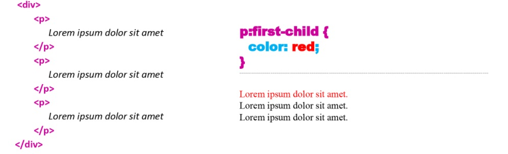
- :last-child: Se utiliza para representar al último elemento entre un grupo de elementos hermanos. 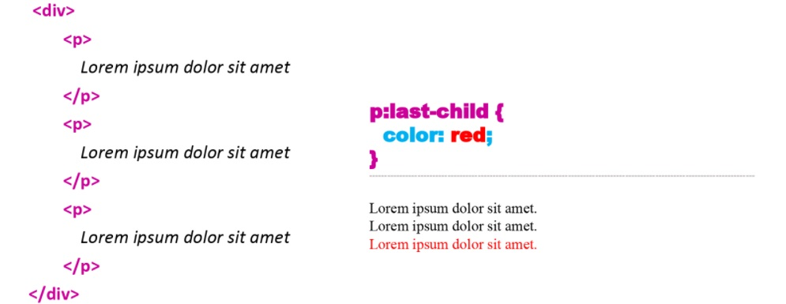
- :nth-child: Coincide con un elemento en función de su posición entre un grupo de hermanos.
- nth-child(3): representaría al tercer elemento.
- nth-child(3n): representaría a los elementos 3, 6 y 9.
- nth-child(3n+6): representaría a los elementos 6 y 9.
- También acepta como valor (even) y (odd) para seleccionar pares e impares. 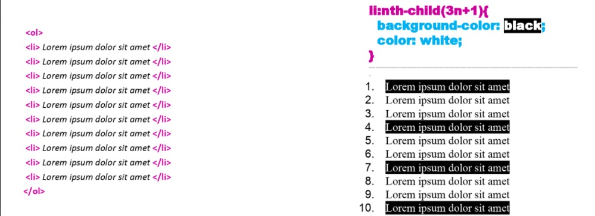
Pseudoclases
- :link: Se refiere a un enlace que todavía no ha sido visitado.
- :hover: Se refiere a un elemento spbre el que se coloca el puntero del mouse.
- :visited: Se refiere a un enlace que ya ha sido visitado.
- :active: Se refiere a cualquier elemento que ha sido activado por el usuario. 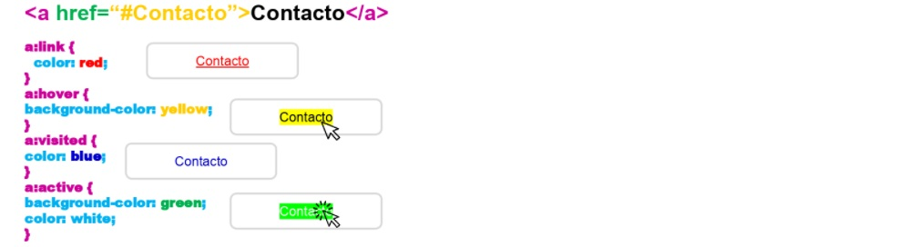
Pseudoelementos
Se utilizan para darle estilo a partes específicas de un elemento.
- ::first-letter: Se utiliza para darle estilo a la primer letra de un texto.
- ::first-line: Se utiliza para darle estilo a la primer línea de un párrafo.
- ::before: Puede utilizarse para agregar algo antes del contenido de un elemento.
- ::after: Coloca contenido después de un elemento.
- ::selection: Agrega estilos a una parte del documento que ha sido resaltada por el usuario.
Keywords
- none: ninguno.
- inherit: el valor de la propiedad del elemento será heredado del elemento padre.
- initial: restablece el valor inicial de la propiedad.
- unset: si es que el elemento heredo un valor diferente al suyo, lo restablece a ese valor heredado del padre.